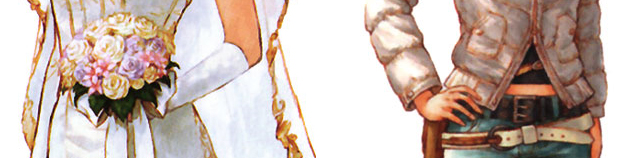
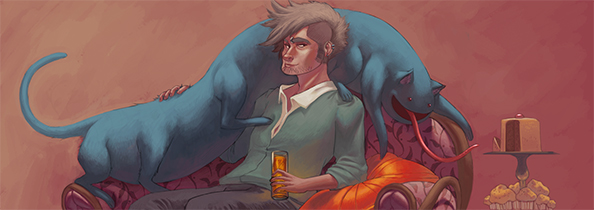
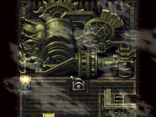
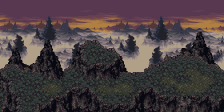
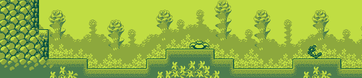
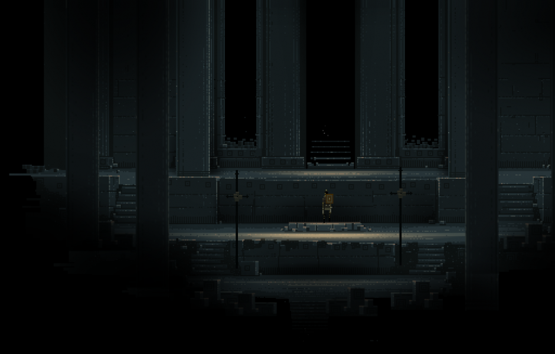

Le costume est un élément particulièrement important du character design. Plus encore qu'à son visage, c'est à ses vêtements et son allure qu'on reconnaît un personnage. Dans un jeu en pixel art par exemple, on ne peut pas, la plupart du temps, reconnaître un visage, pour des raisons de résolution.

L'article qui suit vise à développer quelques points concernant le design de costumes. Je tiens à préciser qu'il ne s'agit pas d'une « méthode » à suivre, mais juste d'une réflexion.
Lire la suite
ou
les 7 commentaires
L'article qui va suivre est une introduction à Photoshop et présente un certain nombre d'outils, dont les calques (leur fonctionnement est similaire dans des logiciels comme Painter ou PaintShopPro). En espérant qu'il sera utile à ceux qui se lancent dans le graphisme :]

Lire la suite
ou
les 3 commentaires
Le mapping est une activité que je trouve extrêmement divertissante et ludique. Elle succède souvent à la conception des graphismes ; c'est alors l'occasion d'exploiter le fruit de longues heures de travail. Bien sûr, mapper correctement c'est, comme pour toutes les disciplines de la création d'un jeu vidéo, un travail de patience (rien ne s'obtient en claquant des doigts). Mapper à partir de graphismes somptueux ne vous garantit pas un succès assuré… Et un mauvais mapping peut lourdement pénaliser des graphismes de qualité. Mais, et j'y reviendrai plus loin, le bon graphiste aura vraisemblablement un maximum de chances d'être en même temps un bon mappeur. La raison ? Non pas un talent inné, mais un œil entraîné à repérer l'anomalie.

Je vous propose dans ce tutoriel des principes assez généraux, forcément imprécis car devant s'adapter à une multitude de cas. Son application directe concerne les graphismes 2D du type console 16 bit (ce sera le support des illustrations proposées). Toutefois la plupart des idées devraient aider quelque soit le support de création.
Lire la suite
ou
les 5 commentaires
Tout ça pour ça…

Si vous m'avez lu jusqu'ici, vos connaissances théoriques en Pixel art sont désormais à peu près correctes. Cependant, vous êtes sans doute déçu que je n'ai pas répondu à vos préoccupations les plus pressantes, du genre « Comment je fais un tile d'herbe ? », « Comment je fais la tête de mon héros ? », « Comment faire un arbre pas trop moche ? », « Où trouver une nouvelle copine ? ». En fait, vous en savez déjà assez pour faire tout ça (sauf pour la copine, et là vous vous débrouillez mieux sans moi je pense)… mais ne rêvez pas trop ! Sans pratique, on n'arrive à rien, et si vous vous posez encore ce genre de question, vous avez besoin de pratique (et de critiques).
Histoire de remédier un peu à cela, nous allons passer en revue les éléments de base qui constituent un tileset de RPG et qui posent beaucoup de problèmes en pixel art. Ou pas.
Lire la suite
ou
les 12 commentaires
Sauf qu'en fait on va parler de dithering avant de parler de textures. Mais ça sonnait mieux dans l'autre sens.

Après avoir fait une étape au pays de la douceur et de la volupté grâce à l'anti-aliasing, nous allons aujourd'hui nous attaquer à des techniques bien crades, sauvages et pleines de pixels (pour changer) — à savoir l'imitation de textures et le dithering. Commençons par une petite mise au point linguistique : le mot français pour parler de dithering est « tramage » mais les habitudes étant ce qu'elles sont (ça et mes préférences personnelles), vous n'entendrez pas le mot « tramage » dans ce chapitre. A vous de voir celui que vous souhaitez utiliser. Vous ne recevrez pas de coups de fouet si votre choix se porte sur « tramage » (juste un mépris sans fin de ma part).
Lire la suite
ou
le commentaire
Là où tous vos pixel arts deviennent beaux. Ou Pas. Ou si en fait, ça dépend à quel point ils étaient moches avant.

Si vous avez le courage de lire de nos jours la presse « spécialiste » du jeu vidéo, vous avez sans doute déjà vu des journalistes se plaindre de l'aliasing dont souffrent certains jeux. Il s'agit du phénomène qui survient quand un objet au premier plan se trouve devant un fond de couleur distincte : le contour de l'objet se détache du fond et « on voit les pixels » sous forme d'un affreux crénelage des bords.
Lire la suite
ou
les 7 commentaires
Et non, on ne dessine plus rien ! Heh, revenez !

Lire la suite
ou
les 7 commentaires
Aujourd'hui on passe de la 2D à la 3D tout en restant en 2D. Si. Vous allez voir (ou pas).
Avec ce dont nous avons parlé jusqu'ici, vous devriez être capable de faire de jolis linearts et de dessiner des décors avec une perspective correcte. C'est un bon départ mais vous vous doutez bien que ça ne suffit pas pour faire un pixel art.

Dans ce chapitre, nous allons nous occuper de shading. Il s'agit d'un ensemble de techniques qui vont nous permettre de sculpter nos décors et nos personnages pour représenter des reliefs ou des formes, bref des volumes (et je vous épargne mon traditionnel laïus sur l'importance capitale de ce chapitre, c'est juste super important).
Lire la suite
ou
les 2 commentaires
Maintenant on va apprendre à dessiner des décors de façon ramenarde. Si si.
La question de la perspective dans les jeux en 2D est une question que personne ne se pose, et c'est sans doute la raison pour laquelle beaucoup de jeux amateurs multiplient les incohérences dans ce domaine. Ce chapitre a pour but d'éclairer un peu votre lanterne sur le sujet, mais il ne traitera cependant que de perspectives RPG-esques. Pour tout ce qui est vue de côté ou vue à la première personne, il faudra aller chercher ailleurs.
Rappelons aux plus distraits d'entre vous que la perspective est « l'art de représenter les objets sur une surface plane (votre écran en l'occurrence) tels qu'ils apparaissent à l'œil de l'observateur. »

Avant de démarrer, je tiens à remercier Lünn sans qui ce chapitre n'aurait ressemblé à rien, puisqu'il s'agit en fait d'une version remise en page d'une conversation que j'ai eue avec lui sur le sujet.
Lire la suite
ou
les 6 commentaires
Cet article vise à vous donner quelques grandes lignes plutôt théoriques relatives à la création en pixel art.

Lire la suite